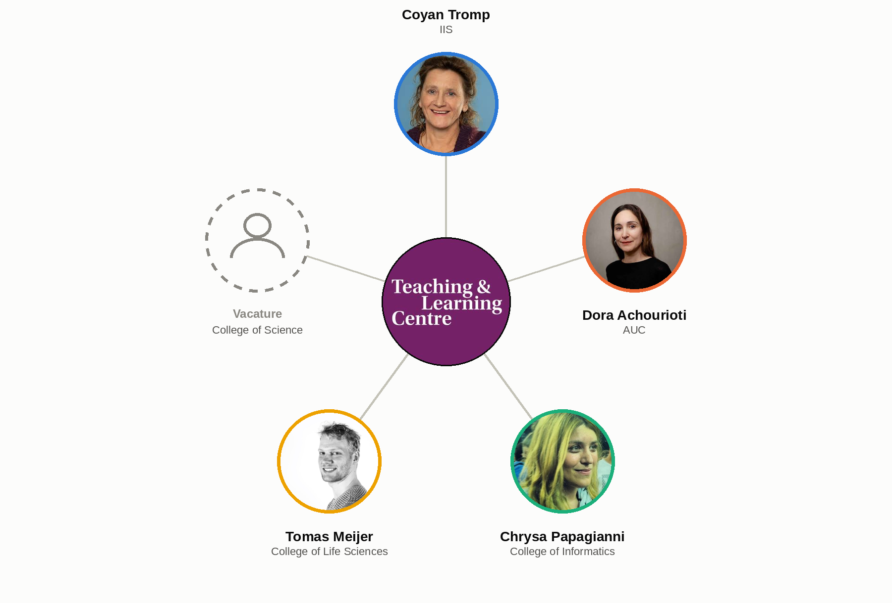

<!DOCTYPE html>
<html lang="en">
<head>
    <meta charset="utf-8" />
    <meta name="viewport" content="width=device-width, initial-scale=1.0, maximum-scale=1.0, user-scalable=no" />

    <title></title>
    <link rel="stylesheet" href="../_shared/e715a0c7082f/dist/reset.css">
    <link rel="stylesheet" href="../_shared/e715a0c7082f/dist/reveal.css" />
    <link rel="stylesheet" href="css/slides-extended.css" />
    <link rel="stylesheet" href="../_shared/e715a0c7082f/dist/theme/white.css" id="theme" />
    <link rel="stylesheet" href="../_shared/e715a0c7082f/plugin/highlight/zenburn.css" />
    <link rel="stylesheet" href="../_shared/e715a0c7082f/plugin/customcontrols/style.css">


    <link rel="stylesheet" href="css/tlc-footer.css" />

    <script defer src="../_shared/e715a0c7082f/dist/fontawesome/all.min.js"></script>

    <script type="text/javascript">
        function pageInIframe() {
            return (window.location !== window.parent.location);
        }

        let forgetPop = true;
        function onPopState(event) {
            if(forgetPop){
                forgetPop = false;
            } else if( pageInIframe()) {
                parent.postMessage(event.target.location.href, "app://obsidian.md");
            }
        }
        window.onpopstate = onPopState;
        window.onmessage = event => {
            if(event.data == "reload"){
                window.document.location.reload();
            }
            forgetPop = true;
        }

        function fitElements() {
            const itemsToFit = document.getElementsByClassName('fitText');
            for (const item in itemsToFit) {
                if (Object.hasOwnProperty.call(itemsToFit, item)) {
                    const element = itemsToFit[item];
                    fitElement(element, 1, 1000);
                    element.classList.remove('fitText');
                }
            }
        }

        function fitElement(element, start, end) {

            let size = (end + start) / 2;
            element.style.fontSize = `${size}px`;

            if (Math.abs(start - end) < 1) {
                while (element.scrollHeight > element.offsetHeight) {
                    size--;
                    element.style.fontSize = `${size}px`;
                }
                return;
            }

            if (element.scrollHeight > element.offsetHeight) {
                fitElement(element, start, size);
            } else {
                fitElement(element, size, end);
            }
        }

        document.onreadystatechange = () => {
            fitElements();
            if (document.readyState === 'complete') {
                if (pageInIframe() && window.location.href.indexOf("?export") != -1){
                    parent.postMessage(event.target.location.href, "app://obsidian.md");
                }
                if (window.location.href.indexOf("print-pdf") != -1){
                    let stateCheck = setInterval(() => {
                        clearInterval(stateCheck);
                        window.print();
                    }, 250);
                }
            }
        };
    </script>
</head>

<body>
    <div class="reveal">
        <div class="slides"><section data-separator="
?
---
?
" data-separator-vertical="
?
--
?
" data-separator-notes="note:" data-markdown><script type="text/template"><!-- .slide: class="drop" template="" -->
<div class="" style="position: absolute; left: 0px; top: 0px; height: 700px; width: 960px; min-height: 700px; display: flex; flex-direction: column; align-items: center; justify-content: center" absolute="true">

# Assessment Network
## Plan van aanpak 2026–2027

Vincent Tijms — versie oktober 2026
</div></script></section><section data-separator="
?
---
?
" data-separator-vertical="
?
--
?
" data-separator-notes="note:" data-markdown><script type="text/template"><!-- .slide: class="drop" template="" -->
<div class="" style="position: absolute; left: 0px; top: 0px; height: 700px; width: 960px; min-height: 700px; display: flex; flex-direction: column; align-items: center; justify-content: center" absolute="true">

## Op hoofdlijnen

- Netwerk dat specialistische toetsdeskundigheid combineert met lokale kennis in de colleges
- Doel: toetsinnovatie — vooral rond GenAI — écht laten landen in het onderwijs
- Dit jaar: eerste vaste vorm geven aan doelen én coördinatiestructuur
</div></script></section><section data-separator="
?
---
?
" data-separator-vertical="
?
--
?
" data-separator-notes="note:" data-markdown><script type="text/template"><!-- .slide: class="drop" template="" -->
<div class="" style="position: absolute; left: 0px; top: 0px; height: 700px; width: 960px; min-height: 700px; display: flex; flex-direction: column; align-items: center; justify-content: center" absolute="true">

## Het probleem

- Opleidingen lopen tegen toetsuitdagingen aan, vooral door generatieve AI
- Geen enkele opleiding heeft een eigen toetsdeskundige
- Eén centrale deskundige (TLC) kan niet elke opleiding diepgaand bedienen
</div></script></section><section ><section data-separator="
?
---
?
" data-separator-vertical="
?
--
?
" data-separator-notes="note:" data-markdown><script type="text/template"><!-- .slide: class="drop" template="" -->
<div class="" style="position: absolute; left: 0px; top: 0px; height: 700px; width: 960px; min-height: 700px; display: flex; flex-direction: column; align-items: center; justify-content: center" absolute="true">

## De oplossing: het Assessment Network

- Specialistische deskundigheid (TLC) + lokale kennis en verbindingen (leden)
- Elk vertegenwoordigd college krijgt een contactpersoon die de uitdagingen ter plekke kent
- TLC ondersteunt en coördineert deze contactpersonen
</div></script></section><section data-separator="
?
---
?
" data-separator-vertical="
?
--
?
" data-separator-notes="note:" data-markdown><script type="text/template"><!-- .slide: class="drop" template="" -->
<div class="" style="position: absolute; left: 0px; top: 0px; height: 700px; width: 960px; min-height: 700px; display: flex; flex-direction: column; align-items: center; justify-content: center" absolute="true">

## Waarom een netwerk werkt

- Kortere leercurve voor nieuwe leden en docenten
- Sneller reageren op vragen vanuit de opleidingen
- Minder dubbel werk — niet opnieuw het wiel uitvinden
- Meer nieuwe ideeën door onderlinge uitwisseling

<aside class="notes"><p>Bron: Wenger, McDermott &amp; Snyder (2002), Cultivating Communities of Practice.</p>
</div></aside></script></section><section data-separator="
?
---
?
" data-separator-vertical="
?
--
?
" data-separator-notes="note:" data-markdown><script type="text/template"><!-- .slide: class="drop" template="" -->
<div class="" style="position: absolute; left: 0px; top: 0px; height: 700px; width: 960px; min-height: 700px; display: flex; flex-direction: column; align-items: center; justify-content: center" absolute="true">

## Huidige leden


</div></script></section></section><section ><section data-separator="
?
---
?
" data-separator-vertical="
?
--
?
" data-separator-notes="note:" data-markdown><script type="text/template"><!-- .slide: class="drop" template="" -->
<div class="" style="position: absolute; left: 0px; top: 0px; height: 700px; width: 960px; min-height: 700px; display: flex; flex-direction: column; align-items: center; justify-content: center" absolute="true">

## Doelen 2026–2027

1. Toetsplannen gereviewd — voor elk vertegenwoordigd college
2. Eén innovatief opgeloste, implementatie-klare casus per vertegenwoordigd college
3. Een duidelijke coördinatiestructuur en processen voor het AN
</div></script></section><section data-separator="
?
---
?
" data-separator-vertical="
?
--
?
" data-separator-notes="note:" data-markdown><script type="text/template"><!-- .slide: class="drop" template="" -->
<div class="" style="position: absolute; left: 0px; top: 0px; height: 700px; width: 960px; min-height: 700px; display: flex; flex-direction: column; align-items: center; justify-content: center" absolute="true">

## Schaalprincipe

- Doelen gelden per college dat een AN-lid heeft geleverd
- Minder leden → minder colleges bediend dit jaar
- Bewuste prikkel: geen lid betekent minder slagkracht voor dat college
- Casus of toetsplan-vraag zonder lid? Wordt wél opgepakt — én is meteen weer een moment om te vragen om een lid
</div></script></section><section data-separator="
?
---
?
" data-separator-vertical="
?
--
?
" data-separator-notes="note:" data-markdown><script type="text/template"><!-- .slide: class="drop" template="" -->
<div class="" style="position: absolute; left: 0px; top: 0px; height: 700px; width: 960px; min-height: 700px; display: flex; flex-direction: column; align-items: center; justify-content: center" absolute="true">

## Opstartfase: eerst één stevig succes

- Zolang casussen niet organisch binnenkomen: zelf actief kiezen op impact + haalbaarheid
- Eerste casus: scripties en/of mondelinge toetsing — plan binnen 1 à 2 maanden
- Lat ligt hoog: breed inzetbare oplossing, geen pleister voor één opleiding
- Sessiebudget: ~2 van de 16 ideatie-sessies naar het vlaggenschip, ~14 over voor de overige 4 colleges (~3-4 per college) — ambitie "casus per college" blijft staan
</div></script></section></section><section ><section data-separator="
?
---
?
" data-separator-vertical="
?
--
?
" data-separator-notes="note:" data-markdown><script type="text/template"><!-- .slide: class="drop" template="" -->
<div class="" style="position: absolute; left: 0px; top: 0px; height: 700px; width: 960px; min-height: 700px; display: flex; flex-direction: column; align-items: center; justify-content: center" absolute="true">

## Werkwijze: instroom en prioritering

Casussen komen binnen via:
- TLC of de decaan — bij een FNWI-breed vraagstuk
- Leden — die een generaliseerbare casus signaleren in eigen college
- College-directeuren — die rechtstreeks een vraagstuk aandragen
- Opleidingen zonder lid: niet afwachten, zelf proactief op commitment aansturen
</div></script></section><section data-separator="
?
---
?
" data-separator-vertical="
?
--
?
" data-separator-notes="note:" data-markdown><script type="text/template"><!-- .slide: class="drop" template="" -->
<div class="" style="position: absolute; left: 0px; top: 0px; height: 700px; width: 960px; min-height: 700px; display: flex; flex-direction: column; align-items: center; justify-content: center" absolute="true">

Selectiecriteria:

- innoverend karakter
- generaliseerbaarheid
- aansluiting FNWI-strategie
- urgentie
</div></script></section></section><section ><section data-separator="
?
---
?
" data-separator-vertical="
?
--
?
" data-separator-notes="note:" data-markdown><script type="text/template"><!-- .slide: class="drop" template="" -->
<div class="" style="position: absolute; left: 0px; top: 0px; height: 700px; width: 960px; min-height: 700px; display: flex; flex-direction: column; align-items: center; justify-content: center" absolute="true">

## Werkwijze: binnen een casus

- Eigenaarschap blijft bij de opleiding zelf
- Eerst kijken wat er al bestaat — portfolio bij scriptie, aanpak Tilburg — niet opnieuw het wiel uitvinden
- AN doet de ideatie; implementatie samen met de opleiding in een werksessie
- Het AN-lid doet follow-up en koppelt terug naar het netwerk
</div></script></section><section data-separator="
?
---
?
" data-separator-vertical="
?
--
?
" data-separator-notes="note:" data-markdown><script type="text/template"><!-- .slide: class="drop" template="" -->
<div class="" style="position: absolute; left: 0px; top: 0px; height: 700px; width: 960px; min-height: 700px; display: flex; flex-direction: column; align-items: center; justify-content: center" absolute="true">

## Ideatieproces: Community of Inquiry

- Cognitive presence — kritisch doordenken van het vraagstuk
- Social presence — vertrouwen om ideeën en twijfels te delen
- Teaching presence — mijn sturing en expertise als facilitator

<aside class="notes"><p>Bron: Garrison, Anderson &amp; Archer (2000), Critical inquiry in a text-based environment.</p>
</div></aside></script></section></section><section ><section data-separator="
?
---
?
" data-separator-vertical="
?
--
?
" data-separator-notes="note:" data-markdown><script type="text/template"><!-- .slide: class="drop" template="" -->
<div class="" style="position: absolute; left: 0px; top: 0px; height: 700px; width: 960px; min-height: 700px; display: flex; flex-direction: column; align-items: center; justify-content: center" absolute="true">

## Coördinatiestructuur

- **Rolverdeling** — Vincent: gezicht en orchestrator vanuit TLC; leden: ambassadeur in eigen college
- **Overleg** — inhoudelijk gericht, hoog democratisch gehalte over belangrijke keuzes
- **Professionalisering** — BKE (leden), SKE (Vincent), conferenties/studiereizen — past binnen de aanstelling
- **Verantwoording** — AN rapporteert aan TLC en colleges; leden aan eigen leidinggevende; uitkomsten ook naar OWIDO/directeuren
- **Randvoorwaarden** — kort factsheet per casus (geen zware rapportage), budget via TLC geregeld
</div></script></section><section data-separator="
?
---
?
" data-separator-vertical="
?
--
?
" data-separator-notes="note:" data-markdown><script type="text/template"><!-- .slide: class="drop" template="" -->
<div class="" style="position: absolute; left: 0px; top: 0px; height: 700px; width: 960px; min-height: 700px; display: flex; flex-direction: column; align-items: center; justify-content: center" absolute="true">

## Planning: ritme en uren

- Vuistregel: 42 effectieve weken × 4 uur = 168 uur per lid per jaar
- Tweewekelijkse ideatie-sessie van een dagdeel, afwisselend donderdag/vrijdag
- Geen sessie rond toetsweken — dan is piekbelasting
- ~16 sessies (~64 uur) per jaar; de resterende ~100 uur voor werksessies, contact met opleidingen, aanspreekpunt zijn, en professionalisering
</div></script></section></section><section data-separator="
?
---
?
" data-separator-vertical="
?
--
?
" data-separator-notes="note:" data-markdown><script type="text/template"><!-- .slide: class="drop" template="" -->
<div class="" style="position: absolute; left: 0px; top: 0px; height: 700px; width: 960px; min-height: 700px; display: flex; flex-direction: column; align-items: center; justify-content: center" absolute="true">

## Openstaande punten

- **Lidmaatschap** — termijnen, aandragen, benoeming en opvolging nog niet uitgewerkt
- **Ideatieproces** — kader is Community of Inquiry; concrete werkvormen per sessie nog uit te werken
</div></script></section><section data-separator="
?
---
?
" data-separator-vertical="
?
--
?
" data-separator-notes="note:" data-markdown><script type="text/template"><!-- .slide: class="drop" template="" -->
<div class="" style="position: absolute; left: 0px; top: 0px; height: 700px; width: 960px; min-height: 700px; display: flex; flex-direction: column; align-items: center; justify-content: center" absolute="true">

## Waar staan we nu?

- 4 leden vast: IIS, AUC, College of Informatics, College of Life Sciences
- College of Science: in gesprek (Jocelyne Vreede; staat op de agenda van het overleg CoS)
- Eerste casus gekozen: de eindscriptie
</div></script></section><section data-separator="
?
---
?
" data-separator-vertical="
?
--
?
" data-separator-notes="note:" data-markdown><script type="text/template"><!-- .slide: class="drop" template="" -->
<div class="" style="position: absolute; left: 0px; top: 0px; height: 700px; width: 960px; min-height: 700px; display: flex; flex-direction: column; align-items: center; justify-content: center" absolute="true">

## Bronnen

- Wenger, McDermott & Snyder (2002). *Cultivating Communities of Practice: A Guide to Managing Knowledge.*
- Garrison, Anderson & Archer (2000). Critical inquiry in a text-based environment. *The Internet and Higher Education.*
</div></script></section><section data-separator="
?
---
?
" data-separator-vertical="
?
--
?
" data-separator-notes="note:" data-markdown><script type="text/template"><!-- .slide: class="drop" template="" -->
<div class="" style="position: absolute; left: 0px; top: 0px; height: 700px; width: 960px; min-height: 700px; display: flex; flex-direction: column; align-items: center; justify-content: center" absolute="true">

## Vragen

- Is dit alles nuttig?
- Mist er iets?
- Zijn er valkuilen?
- Hoe garanderen we commitment vanuit AN-leden en opleidingen?
</div></script></section></div>
    </div>

    <script src="../_shared/e715a0c7082f/dist/reveal.js"></script>
    <script src="../_shared/e715a0c7082f/plugin/notes/notes.js"></script>
    <script src="../_shared/e715a0c7082f/plugin/markdown/markdown.js"></script>
    <script src="../_shared/e715a0c7082f/plugin/obsidian-markdown.js"></script>
    <script src="../_shared/e715a0c7082f/plugin/highlight/highlight.js"></script>

    <script src="../_shared/e715a0c7082f/plugin/zoom/zoom.js"></script>
    <script src="../_shared/e715a0c7082f/plugin/math/math.js"></script>
    <script src="../_shared/e715a0c7082f/plugin/mermaid/mermaid.js"></script>
    <script src="../_shared/e715a0c7082f/plugin/chart/chart.umd.js"></script>
    <script src="../_shared/e715a0c7082f/plugin/chart/plugin.js"></script>
    <script src="../_shared/e715a0c7082f/plugin/customcontrols/plugin.js"></script>


    <script>
        function extend() {
            const target = {};
            for (let i = 0; i < arguments.length; i++) {
                const source = arguments[i];
                for (const key in source) {
                    if (source.hasOwnProperty(key)) {
                        target[key] = source[key];
                    }
                }
            }
            return target;
        }

        function isLight(color) {
            // normalize to rgb(a)
            const optionEl = document.createElement("option");
            optionEl.style.color = color;
            const normalizedColor = optionEl.style.color;

            const match = normalizedColor.match(/(\d+), (\d+), (\d+)/);
            if (!match) return false;
            const [, c_r, c_g, c_b] = match;

            const brightness = ((c_r * 299) + (c_g * 587) + (c_b * 114)) / 1000;
            return brightness > 155;
        }

        const bgColor = getComputedStyle(document.documentElement).getPropertyValue('--r-background-color').trim();

        if (isLight(bgColor)) {
            document.body.classList.add('has-light-background');
        } else {
            document.body.classList.add('has-dark-background');
        }

        // default options to init reveal.js
        const defaultOptions = {
            controls: true,
            progress: true,
            history: true,
            center: true,
            transition: 'default', // none/fade/slide/convex/concave/zoom
            plugins: [
                ObsidianMarkdown,
                RevealHighlight,
                RevealZoom,
                RevealNotes,
                RevealMath.KaTeX,
                RevealMermaid,
                RevealChart,
                RevealCustomControls,
            ],
            allottedTime: "120",

            katex: {
                local: '../_shared/e715a0c7082f/plugin/math/katex',
                extensions: ["mhchem"],
            },
            markdown: {
                gfm: true,
            },
            mermaid: {
                theme: isLight(bgColor) ? 'default' : 'dark',
            },
            customcontrols: {
                controls: [
                    {
                        id: 'toggle-overview',
                        title: 'Toggle overview (O)',
                        icon: '<i class="fa fa-th"></i>',
                        action: 'Reveal.toggleOverview();'
                    },
                ]
            },
        };

        if ( pageInIframe() ) {
            defaultOptions.scrollActivationWidth = 5;
        }

        // options from URL query string
        const queryOptions = Reveal().getQueryHash() || {};

        const options = extend(defaultOptions, {"controls":true,"progress":true,"slideNumber":true,"center":true,"transition":"none","transitionSpeed":"default","width":960,"height":700,"margin":0.04}, queryOptions);
    </script>

    <script>
      /**
       * KaTeX Equation Numbering Note
       *
       * KaTeX maintains a global equation counter for \begin{equation} environments.
       * When navigating between slides, reveal.js math plugin may re-render math, causing
       * equation numbers to change randomly.
       *
       * Note: Regular $$ blocks don't have equation numbers - only \begin{equation} does.
       *
       * If you experience issues with equation numbers changing:
       * Use manual \tag{} commands: \begin{equation}\tag{1} ... \end{equation}
       */

      Reveal.initialize(options);
    </script>
    <!-- created with Slides Extended reveal.html template -->
</body>
</html>
